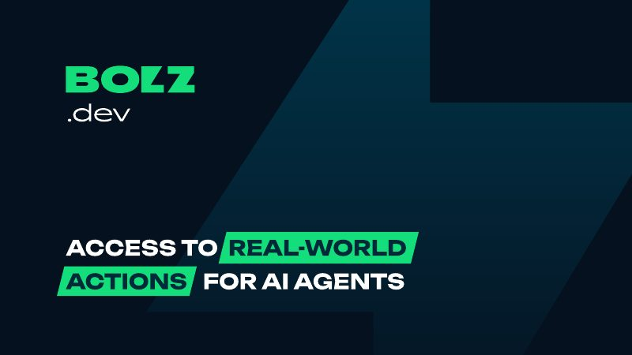
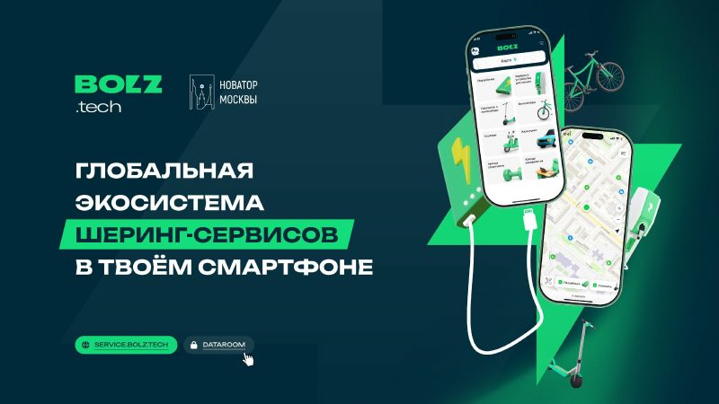
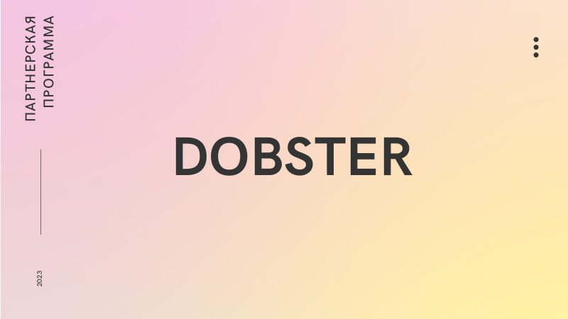
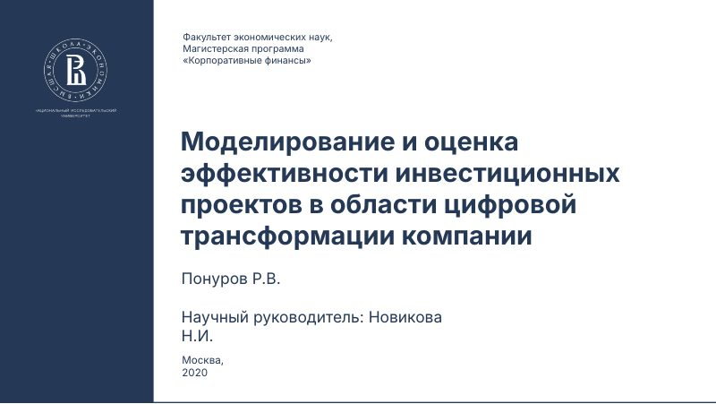
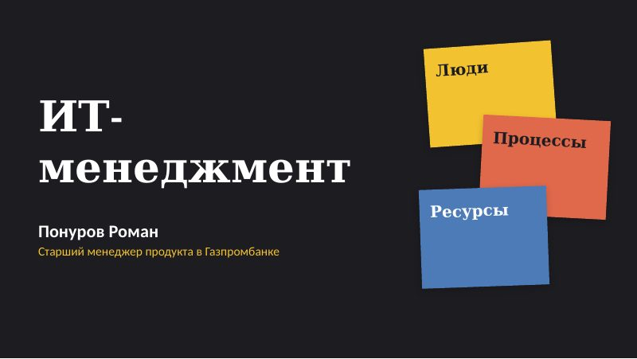

Decks
Pitches for my own products and teaching materials. Each one opens in full as a PDF.
-

bolz.dev — an MCP connector for AI agents
The problem from three sides — services, agents, users — an MCP-based solution, marketplace and taxi scenarios, competitors, go-to-market and roadmap.
-

bolz.tech — an ecosystem of sharing services
B2B2C model via WebView, user journey, a survey of 200 respondents, architecture, market size, business model, competitors and unit economics.
-

Dobster — partnership programme
How the help platform works: recipients, helpers and donors, a non-profit model without fees and what partner companies get.
-

Evaluating digital transformation projects
Master's thesis defence: how digital transformation projects differ from ordinary investment projects, cases of Rosseti, Russian Railways and Lukoil, four hypotheses and an evaluation model.
-

IT Management. Lecture 1
Introduction to IT management: team roles, product life cycle, Waterfall and Agile, DORA metrics, product vs project manager, the path to an AI product manager and a team case.